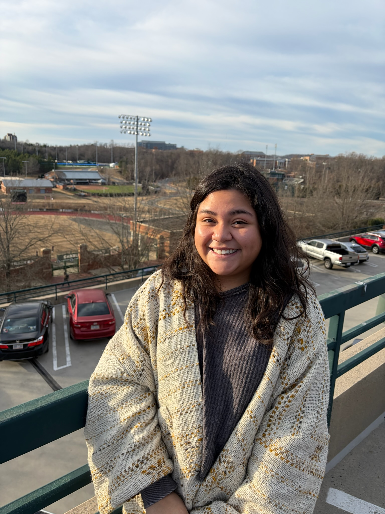
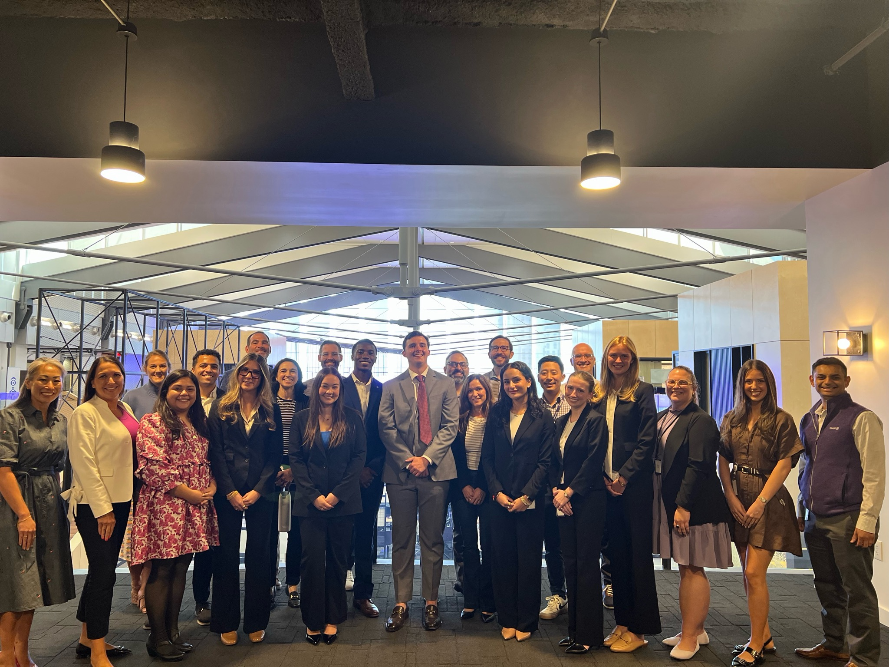
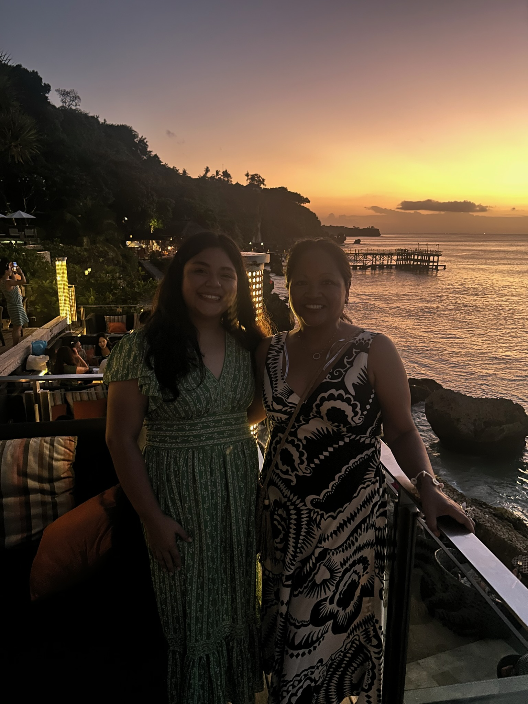

All about me!
I’m a Computer Science (HCI) and Psychology student at the University of North Carolina at Charlotte with a passion for human-centered design and meaningful user experiences. I’m deeply interested in understanding how people think, feel, and interact with technology, and I enjoy translating those insights into designs that are both functional and empathetic. My work is driven by curiosity and a strong appreciation for research. I love engaging with users, uncovering their needs, and designing solutions that genuinely improve their experiences.
Outside of academics, I’m a creative at heart. I enjoy expressing myself through art in many forms, including painting, jewelry-making, and ceramics. I also love gardening, which gives me space to slow down and stay connected to the process of growth and creation. These creative outlets shape how I approach problem-solving, bringing imagination, care, and a personal touch into everything I do.